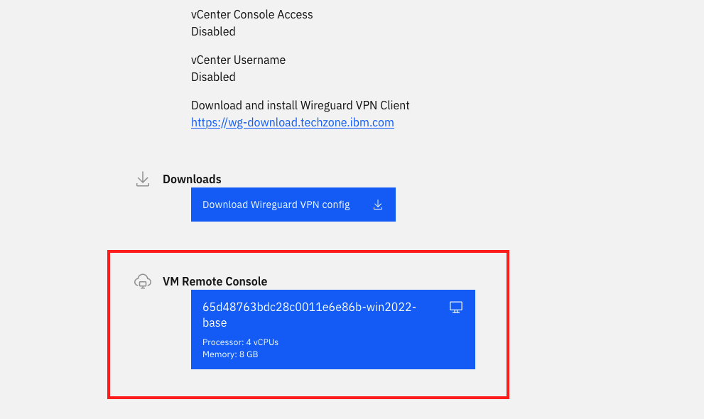

Accessing the Environment¶
Accessing your Virtual Machine¶
- Access the workshop Attendee URL here
- Log in with your IBM ID.
- If you don't already have an IBM ID, you will need to create one here
- When prompted, enter the workshop password:
password - Open your virtual machine using the big blue button under 'VM Remote Console'.

- Log into the RHEL virtual machine with password:
p@ssw0rd(that's a zero). You may already be logged in when first accessing the VM.
You may need to hit your Enter key to reach the login page.
If you run into an issue where your mouse pointer is not visible, try to open the Virtual Machine in a different browser. If that doesn't work, try to open the VM in a new window with the button in the top right of the VM.
Please do not log off or reboot the Virtual Machine, as that will disconnect the VPN.
Accessing OpenShift web console¶
- Go to the OpenShift Cluster here
- Use your credentials in the table below.
Connecting to OpenShift via the CLI¶
To access OpenShift via the CLI, you must first ssh to one of our WSC Linux guests from the Windows Virtual Machine.
ssh userNN@192.168.176.61
Then paste your oc login command.
OpenShift credentials¶
You can find your Environment Number on the TechZone Workshop page in the 'Your Environment' section.

| Environment Number | NN | Username | Password |
|---|---|---|---|
| 1 | 01 | user01 |
p@ssw0rd |
| 2 | 02 | user02 |
p@ssw0rd |
| 3 | 03 | user03 |
p@ssw0rd |
| 4 | 04 | user04 |
p@ssw0rd |
| 5 | 05 | user05 |
p@ssw0rd |
| 6 | 06 | user06 |
p@ssw0rd |
| 7 | 07 | user07 |
p@ssw0rd |
| 8 | 08 | user08 |
p@ssw0rd |
| 9 | 09 | user09 |
p@ssw0rd |
| 10 | 10 | user10 |
p@ssw0rd |
| 11 | 11 | user11 |
p@ssw0rd |
| 12 | 12 | user12 |
p@ssw0rd |
| 13 | 13 | user13 |
p@ssw0rd |
| 14 | 14 | user14 |
p@ssw0rd |
| 15 | 15 | user15 |
p@ssw0rd |
| 16 | 16 | user16 |
p@ssw0rd |
| 17 | 17 | user17 |
p@ssw0rd |
| 18 | 18 | user18 |
p@ssw0rd |
| 19 | 19 | user19 |
p@ssw0rd |
| 20 | 20 | user20 |
p@ssw0rd |
| 21 | 21 | user21 |
p@ssw0rd |
| 22 | 22 | user22 |
p@ssw0rd |
| 23 | 23 | user23 |
p@ssw0rd |
| 24 | 24 | user24 |
p@ssw0rd |
| 25 | 25 | user25 |
p@ssw0rd |
| 26 | 26 | user26 |
p@ssw0rd |
| 27 | 27 | user27 |
p@ssw0rd |
| 28 | 28 | user28 |
p@ssw0rd |
| 29 | 29 | user29 |
p@ssw0rd |
| 30 | 30 | user30 |
p@ssw0rd |